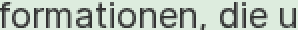
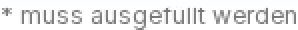

«* muss ausgefüllt werden» – www.bs.ch/apps/zonensuche


Ausschnitte 2× vergrössert (Pixel unverändert, ohne Glättung).
- Vorher
- PR #53 fand den Widerspruch (berechnet 4,48:1, Augenschein-Ausschnitt ≈1,12:1) und eine klebende Überschrift mit
bg-white/90in derselben Zeile; Ursache offen, vermutet wurde ein Scroll-Zustand. - KI-Beitrag
-
Mistral (
mistral-small-2603, Temperatur 0) entwarf in jedem Versuch drei konkurrierende Hypothesen und ein ausführbares Probe-Modul; Claude prüfte als frischer Kritiker und Richter.Versuch Code (SHA-256) Was geschah a1 Entwurf 2c506e05…Lief auf keiner Kopie: Broker lehnte gebrochene Koordinaten ab. Kritiker: falsche Messposition, Hintergrund-Alpha statt Deckkraft prüfen. a2 Revision 242c3c1a…Entscheidend für Desktop: Stapel unter dem Hinweis, Pixel auf 4 Kopien und live 1440/1280; Wiederholung bei 390 stiess zufällig auf den Banner. Kritiker: 390-Werte ungültig, NaN-Scroll, Probe überschreibt Broker-Feld. a3 Revision 242c3c1a…Code byte-gleich mit a2 (nur Hypothesentext geändert) – Stillstand. a4 Revision 8a784cf8…Nur die ungültige 5. Scrollposition entfernt; Kernänderung des Kritikers ignoriert. a5 Revision f3655729…Kritiker-Änderungen als Pflicht übergeben. Die Begründung behauptet sie umgesetzt, der Code tut es nicht: Banner-Prüfung kann nie greifen (falsche Datenform), Scroll-Funktion wird nie aufgerufen, Überschreiben bleibt. Nicht ausgeführt. a6 Revision 1b9e6d14…Mit den Befunden des Richters zu a5 als Kritik. Näher dran (prüft fixedüber dem Hinweis, rechnet mit aktuellem Scroll, überschreibt nichts mehr), übergibt der Prüfung aber das ganze Punkt-Array statt eines Stapels – die Verdeckung wird wieder nie erkannt. An der neuen lokalen Kopie mit fixiertem Banner gescheitert (misst Bannerpixel 232), daher nicht live ausgeführt. Damit ist das Limit von 6 Entwürfen erreicht.c1 Gegenprobe 8669afea…Vom Koordinator handgeschrieben, nicht KI-generiert; gleiche Sandbox und gleicher Broker. Lieferte die einzige gültige 390-Messung. Auch hier lief die erste Fassung mit demselben Formfehler wie a5 ( .results) auf den lokalen Kopien an und wurde vor dem Live-Lauf korrigiert; die API-Beschreibung für den Designer war in diesem Punkt korrekt.Code und Vorschläge: evidence/ (Vorschläge a1–a6, Probes a1/a2/a4/a5/a6, Gegenprobe c1, Kritiken, Urteil, Messübersicht).
- Messung
-
Generierter Code lief in einer bwrap-Sandbox ohne Netz, Dateisystem, Umgebung und Kindprozesse; einzige Fähigkeit war ein Lese-Broker mit acht festen Operationen (öffnen, Viewport, Text finden, Selektor, Elemente an Punkt, Scrollen, Pixel, Screenshot) – keine Klicks, Eingaben oder DOM-Änderungen. Live nur die eine freigegebene URL, mindestens 10 s Abstand, einzeln, jeder Ladevorgang vorab im Ledger.
- Desktop live (a2, a2-replay, c1, c1-replay): zuoberst an allen Hinweis-Punkten
h3 … sticky z-8, Hintergrundoklab(1 0 0 / 0.9), Rechteck 310,365 819×48 überdeckt den Hinweis 951,383 149×18; Pixel min = p05 = 242 bei Scroll 0/8/24/48; Hintergrund daneben 255. - Kontrollen: Überlagerung 242 · ohne Überlagerung 119 · sauber 119 · Eltern-Deckkraft 0,12 → 238 ohne Überlagerer · fixierter Banner (neu, nach dem Mobil-Befund): c1 erkennt ihn und misst nach Scrollen 119, a6 erkennt ihn nicht.
- Mobil live (c1, c1-replay): beim Laden fixierter Banner (0,317 390×527, z 99999) über dem Hinweis; nach Scroll auf 258 ist der Hinweis zuoberst, min 119.
- Frische Wiederholung: neuer Prozess und Browser, gleicher Code-Hash; alle Werte reproduziert.
- Ungültig/verworfen: a1 (keine Daten), 5. Scrollposition in a2 (abgelehnt), Kopie-«Scrolls» (Seite nicht scrollbar), 390-Pixel aus a2 (Banner), von der Probe überschriebene
effectiveOpacity.
- Desktop live (a2, a2-replay, c1, c1-replay): zuoberst an allen Hinweis-Punkten
- Ergebnis
-
gestützt Halbtransparente Überschrift überlagert den Hinweis – bei 1440 und 1280 px, statisch (kein «Kleben» nötig).
verworfen Kanten-/Ausschnittfehler · Eltern-Deckkraft · Scroll-/Clip-Zustand (als Ursache der Blässe).
Nebenbefund Bei 390 px verdeckt der Cookie-Banner den Hinweis beim Laden ganz; die Blässe tritt dort nicht auf.Gerenderter Kontrast am Desktop aus den gemessenen Grauwerten: (255 → 242) ≈ 1,12:1 statt 4,48:1. Für die Aufgabe heisst das: Wer am Desktop ein Formular ausfüllt, sieht die Erklärung des Sterns kaum.
Unsicherheit: nur Chromium, DPR 1; nicht geprüft sind Firefox/WebKit, hochauflösende Bildschirme, Breiten zwischen 390 und 1280 px, Desktop mit geschlossenem Banner und tiefere Scrollpositionen. Was Menschen mit Sehbehinderung tatsächlich wahrnehmen, wurde nicht untersucht.
- Verantwortung & Standard
- Zuständigkeit laut Impressum der Seite: Inhalt bei der Webredaktion des Kantons, Betrieb bei IT BS bzw. dem genannten Dienstleister; welche Stelle die Komponente verantwortet, ist unbestätigt. Als Massstab nennt der Kanton WCAG 2.1 AA bzw. eCH-0059; einschlägig wäre Erfolgskriterium 1.4.3 (Kontrast). Dieser Bericht ist eine technische Messung, kein Prüfurteil.
- Ergebnis vs. Baseline
- Neu: ein nachgewiesener Mechanismus mit rechnerischer Übereinstimmung (241,4 vs. 242), Begrenzung auf Desktop-Breiten, ein zusätzlicher Banner-Befund und die widerlegte Scroll-Vermutung. Aufwand: 6 Designer-Aufrufe (USD 0,0188; gesamt mit früheren Versuchen USD 0,0914 von 5), 8 Live-Ladevorgänge, 3 Kritiken, 1 Urteil. Ehrliche Bilanz der KI-Anpassung: Eine Revision (a2) brachte den Durchbruch für Desktop; die vier folgenden stagnierten, behaupteten Änderungen, die der Code nicht enthielt, oder scheiterten an der lokalen Kopie. Die Mobil-Antwort stammt aus der handgeschriebenen Gegenprobe. Ohne Kritiker, Richter, lokale Kontrollen und Gegenprobe wären der ungültige Mobilwert und die falschen Selbstauskünfte durchgerutscht – genau diese Prüfschritte sind der Nutzen des Loops, nicht der Designer allein.
- Nächster Schritt
- Mit dem Restbudget (8 Ladevorgänge) prüfen, ob der Effekt in Firefox und WebKit und bei DPR 2 besteht; erst danach einen Befund für die zuständige Redaktion entwerfen – Versand nur nach ausdrücklicher Freigabe.